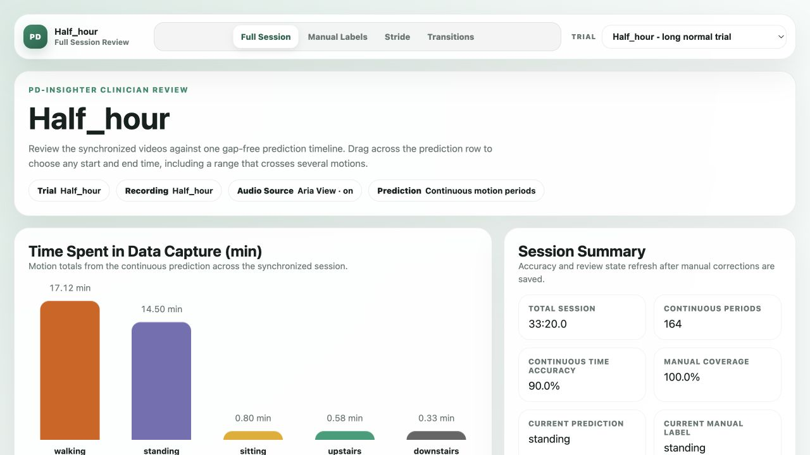
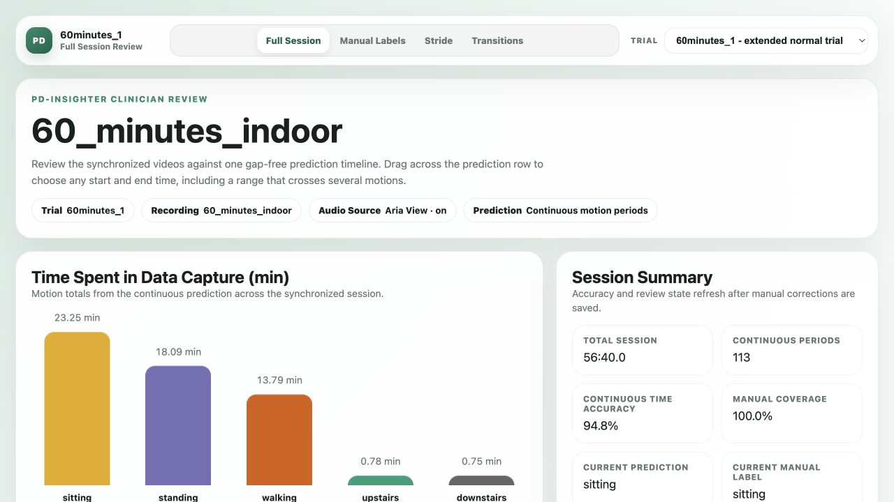
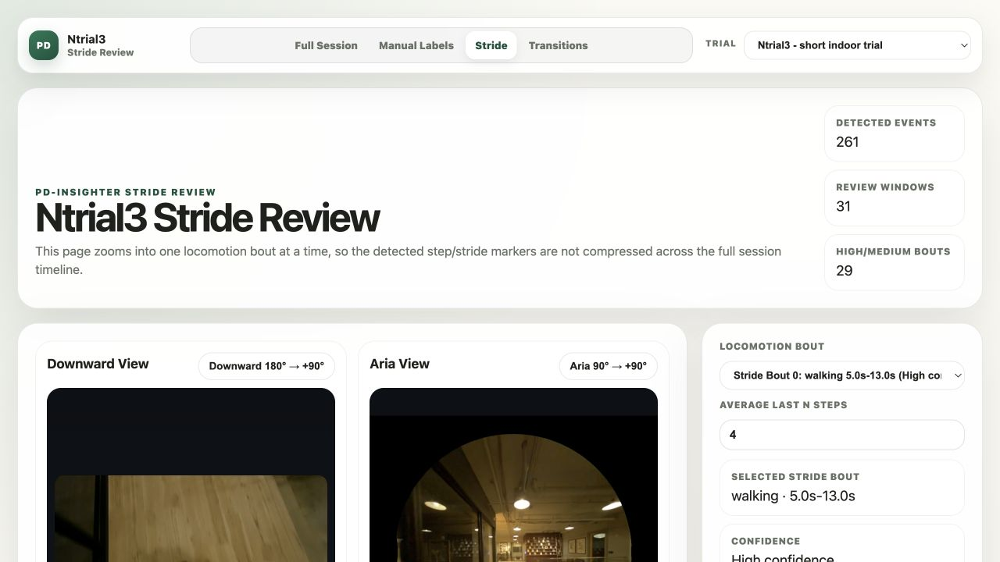

Long normal trial
Half_hour
A longer indoor and outdoor session for reviewing continuous classification, synchronization, and manually labeled motion periods.
Explore synchronized Aria and downward video alongside continuous automatic classification, manual labels, step and stride estimates, and first-class transition states.
The dashboard data and timing are preserved from the research build. Only the review videos are compressed for easier transfer and browser playback.

A longer indoor and outdoor session for reviewing continuous classification, synchronization, and manually labeled motion periods.

A 56-minute indoor and outdoor session for evaluating continuous automatic classification, long-session labels, transitions, and sustained gait patterns.

A compact session that makes step timing, left and right estimates, stride proxies, and state changes easier to inspect closely.